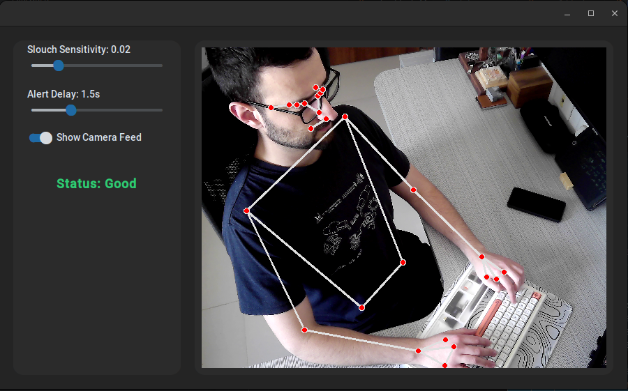
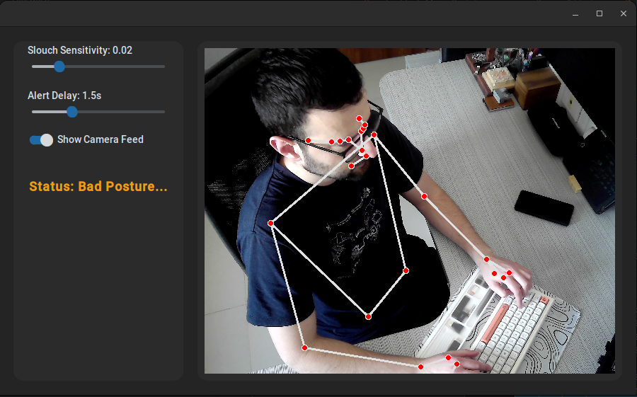
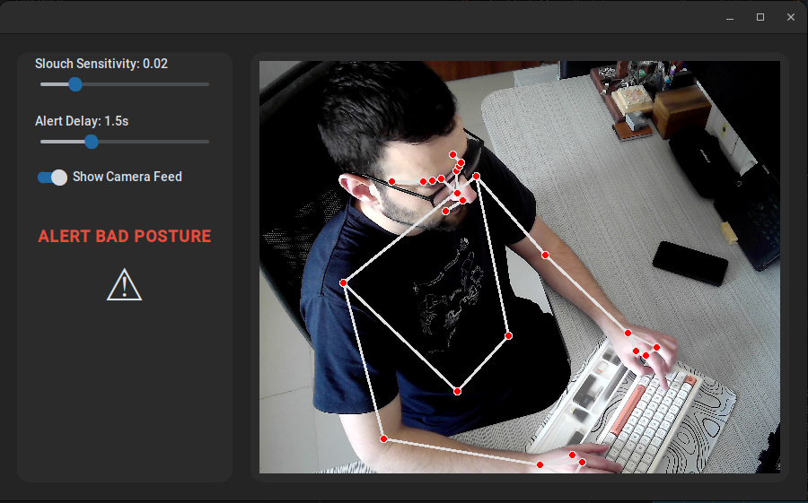

Live States Demo



How It Works
MediaPipe detects facial and bodily landmarks in real-time. The core algorithm specifically extracts the positions of the mouth corners and the shoulder line.
A perpendicular distance is calculated from the mouth to the shoulder line using a cross-product formula. By normalizing this drop distance against the user's shoulder width, the measurement becomes completely scale-invariant.
If that distance exceeds your configurable threshold for longer than the alert delay, the app warns you with a visual and audible alert.
Features Grid
Live Camera Feed
Toggleable live preview of webcam feed with overlaid MediaPipe skeletal landmarks.
Configurable Sensitivity
Adjust the mouth-to-shoulder distance threshold in real-time to match different body types.
Configurable Alert Delay
Set a grace period (e.g., 5 seconds) before an alert triggers to prevent false positives when reaching for items.
Audio Alert
Uses SoundDevice to trigger a distinct beep when bad posture is confirmed.
Frame-Skip Optimization
AI runs every 2nd frame while the skeleton is drawn every frame using cached results, cutting CPU usage in half.
Camera Auto-Fallback
Gracefully falls back from external camera → built-in webcam → error state if devices are disconnected.
Code Highlight
# Step 2: Calculate distance for the Left Mouth Corner
lm_x = left_mouth.x - r_shoulder.x
lm_y = left_mouth.y - r_shoulder.y
left_distance = (dx * lm_y - dy * lm_x) / line_lengthArchitecture
camera_utils.py
Camera fallback logic & frame capture
pose_utils.py
MediaPipe landmarks & slouch math
gui.py
CustomTkinter UI & visual alerts
main.py
App entry point & orchestration